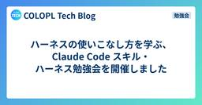

COLOPL Tech Blog
https://blog.colopl.dev/
コロプラのエンジニアブログです
フィード

ハーネスの使いこなし方を学ぶ、Claude Code スキル・ハーネス勉強会を開催しました
COLOPL Tech Blog
こんにちは、技術基盤本部の永野です。 6月30日(火)に社内Claude Code勉強会を開催し、MCを担当しました。 コロプラでは以前からAI活用に関する勉強会を定期的に開催しています。 直近では、AI開発の実態を共有するために、社内AI勉強会『突撃、隣のAIライブコーディング！』を開催しました。 blog.colopl.dev 社内ではGitHub Copilotが主流でしたが、最近はClaude Codeを利用するエンジニアが着実に増えております。 利用者が増えるにつれて、基本的な使い方にとどまらないClaude Codeの仕組みへの関心も高まってきました。 そこで今回は、ハーネスの使い…
2日前

Open Match のバックフィルで Redis の proposed_ticket_ids が積み上がる問題と対処法
COLOPL Tech Blog
こんにちは。エンジニアの薮 (@tyabu12) です。 今回は、ゲームのマッチメイキングに使っている Open Match の運用中に遭遇した、マッチングは正常なのに Redis のメモリだけが単調に増え続ける問題と、その対処法をご紹介できればと思います。 結論から書いてしまうと、犯人は proposed_ticket_ids という Redis のキーで、このキーのエントリがマッチング後もお掃除されずに残り続け、メモリが増え続けてしまうというものでした。マッチング完了時に DeleteTicket を明示的に呼ぶようにしたところ、メモリの増加は収まりました。 本記事では本番環境で発生した現…
4日前

PHPStan の baseline の「いつか直す」を「ついでに直す」へ。@phpstan-ignore を挿入する CLI を作った
COLOPL Tech Blog
こんにちは。エンジニアの薮 (@tyabu12) です。 PHPStan を大規模な既存コードベースに後から導入するとき、真っ先にぶつかるのが 「既存コードに対して生まれる、大量の PHPStan のエラーをどう扱うか」 という問題です。 コロプラでも稼働期間の長いプロジェクトに PHPStan を導入していて、その導入の経緯はこちらの記事で紹介されています。本記事はその先の話で、導入後の運用で見えてきた課題と、それに対して作った CLI ツールの話になります。 公式が提供する baseline という仕組みを使えば既存エラーをまとめて無視できます。ただし、実際に baseline を使って導…
25日前
ITフリーランス向けサイト「フリーランスHub」にて、当ブログが紹介されました
COLOPL Tech Blog
ITフリーランス向けサイト「フリーランスHub」にて、当ブログ「COLOPL Tech Blog」が紹介されました。 freelance-hub.jp 「スキルアップやキャッチアップにつながる！注目のITブログ・メディアまとめ その3」という記事の中で、エンジニアのスキルアップや技術のキャッチアップに役立つITブログ・メディアの一つとして取り上げていただきました。ゲーム開発の現場で培った実践的なノウハウから、大規模な通信を支えるバックエンドの仕組みやAI活用まで、専門的な知見を幅広く発信しているブログとしてご紹介いただいています。 今後もコロプラのエンジニアリングに関する情報を発信してまいりま…
25日前
Claude Codeを自分色に染める1つの習慣と1つの仕組み
COLOPL Tech Blog
こんにちは、エンジニアの田中です！普段は社内システムの運用や改善、業務効率化に関わる仕組みづくりを担当しています。 そんな日々の中で、Claude Codeを使い始めて1年、利用頻度は増える一方です。使えば使うほど気になってくるのが「自分はClaude Codeをうまく使えているのか？」という点です。 同じような指示を毎回打ち直していないか AIの出力を結局自分で手直ししていないか 意図が伝わらず、期待通りの結果が得られていないか この記事では、こうした「使い方のムダ」を改善するために実践している、1つの習慣と1つの仕組みを紹介します。 習慣: タスクの節目に振り返り — 良かったこと・改善し…
1ヶ月前
ITフリーランス向け案件検索サイト「フリーランスジョブ」にて、当ブログが紹介されました
COLOPL Tech Blog
ITフリーランス向け案件検索サイト「フリーランスジョブ」のコラム記事にて、当ブログ「COLOPL Tech Blog」を取り上げていただきました。 freelance-job.com 「ゲームとエンタメ業界のテックブログ20選！開発現場の知見を学べる企業ブログ」という記事の中で当ブログをご紹介いただいております。数あるテックブログの中から、コロプラの日々の開発現場での知見や取り組みに注目していただけたことを大変嬉しく思います。 これからも有益な技術情報やエンジニア組織のカルチャーを積極的にお届けしてまいります。今後とも COLOPL Tech Blog をよろしくお願いいたします！ Colop…
1ヶ月前
サーバーサイドC#/.NETの取り組みについて社内勉強会を開催しました
COLOPL Tech Blog
こんにちは！バックエンドエンジニアの千葉です。 コロプラでは定期的に社内勉強会を開催しており、テックブログでもその様子を不定期に紹介しています。 blog.colopl.dev 今回は、サーバーサイドにおけるC#/.NETの取り組みをテーマにした勉強会を開催しましたので、その様子をご紹介します。 取り組みの背景 コロプラのゲームクライアントはUnityで開発しており、社内には日常的にC#を書いているエンジニアが多くいます。一方でサーバーサイドはPHPとLaravelの技術スタックを中心に据えており、社内用に拡張した laravel-extension をベースに長く運用してきた基盤があります。…
1ヶ月前
ゲーム開発の現場から Laravel Live Japan に行ってきました！
COLOPL Tech Blog
こんにちは、エンジニアの薮 (@tyabu12)です。 先日、日本初開催の Laravel 公式カンファレンスに参加してきました。 laravellive.jp 参加のきっかけ きっかけは偶然おすすめに流れてきた、Laravel コアチームで唯一の日本人である濱崎さんのインタビュー動画でした。 シカゴの Laracon に勢いで参加して触発され、翌年 Laracon EU で登壇し、ついにはカンファレンスを日本で開催するというその行動力に胸が熱くなりました。 コロプラでは長年 PHP や Laravel をゲームバックエンドとして使っていることもあり、Laravel のコミュニティに興味があっ…
1ヶ月前
【祝！ブログ100本記念】コロプラの技術広報の変遷
COLOPL Tech Blog
こんにちは、エンジニアの山田（@yamadashy）です。 この記事は、記念すべき COLOPL Tech Blog 100 本目の記事です。せっかくの節目なので、コロプラの技術広報がどのように始まり、どのように運用を変えてきたかを振り返ります。 コロプラでは現在、社内外の勉強会、カンファレンス協賛、スポンサーブース、技術ブログなど、さまざまな形で技術発信に取り組んでいます。こうした技術広報の活動は、最初から役割や運用が整理されていたわけではありません。社内の勉強会や LT、エンジニアの個別の発信、イベント運営の試行錯誤が少しずつ繋がり、いまの形になってきました。 振り返ると、変わってきたのは…
1ヶ月前
Generative AI Japanのウェビナー に登壇させていただきました！
COLOPL Tech Blog
こんにちは。コロプラでエンジニアの中途採用と技術広報を担当しているA.T.です。 2026年4月28日に開催された一般社団法人 Generative AI Japanさんのウェビナーに、CIOの菅井が登壇させていただきました。現在、多くの企業が生成AIの導入を模索していますが、コロプラでは既に社員の9割以上が生成AIを活用するフェーズに到達しています。今回のウェビナーでは、私たちがどのようにして「ただ導入するだけ」で終わらせず、全社的な定着とプロダクトへの実装まで繋げたのか、その裏側をお話ししました。 本記事では、当日のセッション内容を紹介させていただきます。 Generative AI Ja…
2ヶ月前
「チャットツールでの画像受渡し」は要注意！問題点と対処法について
COLOPL Tech Blog
こんにちは、エンジニアの 工藤 です。 Slack や社内向けチャットサービスを使っている組織であれば、画像などのリソースをチャンネルやスレッドに投稿する機会はほぼ必ずあるのではないでしょうか？ プレビュー表示もされ便利な画像投稿機能ですが、そこには 思わぬ落とし穴 があります。今回はコロプラで起きた実例と利便性を損なわない形での解決策について書かせていただければと思います。 Slack について Slack は (当初は) 電子メールの代替を目的とした、企業内での連絡をチャット形式で行える SaaS (Software as a Service) です。多くの企業で利用されており、 Slac…
2ヶ月前
Deep Dive PHP: PHP 8.5 の新機能「Tail call VM」とは？
COLOPL Tech Blog
こんにちは、エンジニアの 工藤 です。 PHP 8.5 がリリースされてもう半年近く経とうとしていますが、ひっそりと PHP 8.5 に入った Tail call VM について詳しく知っている人は少ないのではないかと思います。 この Tail call VM は PHP を利用する人にとっては直近で大きな意味や影響があるものではないのですが、今後の PHP の未来に向けて、非常に大きな一歩を踏み出したとも言えるような機能になっています。 今回はそんな Tail call VM とそれが生まれた背景、今後どうこれが活きてくるのかについてご紹介させていただきたいと思います。 PHP の動作原理と…
2ヶ月前
社内AI勉強会『突撃、隣のAIライブコーディング！』を開催しました
COLOPL Tech Blog
こんにちは、AIイネーブルメントグループの山田（@yamadashy）です。 4月10日（金）に社内AI勉強会「突撃、隣のAIライブコーディング！〜普段の開発風景を見せ合う会〜」を開催しました。 3名のエンジニアに各15分で普段のAI駆動開発をそのまま実演してもらう、という企画です。オフラインとオンライン配信のハイブリッド形式で、約50名が参加しました。 開催の背景 コロプラでは以前から、AI活用に関する勉強会を定期的に開催しています。直近では社内AI LT会を開催し、7名のエンジニアがAI活用事例をLT形式で発表しました。 blog.colopl.dev 今回の企画のきっかけは、社内Slac…
3ヶ月前
LLM 時代だからこそ！改めて見直す Development Containers
COLOPL Tech Blog
こんにちは、エンジニアの 工藤 です。 皆さん、 Development Containers はご存知でしょうか？ LLM 時代よりも前から既にバリバリ活用されている方も居れば、 LLM を安全に使うために使い始めた人、使ったほうが良いとは思いつつもまだ手を付けられていない人なども多いのではないかと思います。 Development Containers はプロジェクトの開発環境をコンテナ上に構築することで環境依存を最小限に抑え、かつローカルマシンに影響を及ぼさない形でサンドボックス化して隔離する仕組みです。開発環境のセットアップも自動化されるため、プロジェクトのオンボーディングにも有用で保…
3ヶ月前
Google Cloud Next '26 に参加しました
COLOPL Tech Blog
こんにちは、エンジニアの千葉です。 今年もラスベガスで開催されたGoogle Cloud Next '26に参加してきました。コロプラとしては3年連続の現地参加です。 今年のテーマは "The Agentic Cloud" で、AIエージェントの実運用フェーズへの移行が大きく打ち出された年となりました。 コロプラからは竹ノ内、齋木、千葉の3名が参加しました。 過去2年の参加レポートも公開していますので、あわせてご覧ください。 blog.colopl.dev blog.colopl.dev
3ヶ月前
ITフリーランス向けサイト「レバテックフリーランス」にて、当ブログが紹介されました
COLOPL Tech Blog
ITフリーランス向けサイト「レバテックフリーランス」にて、当ブログ「COLOPL Tech Blog」が紹介されました。 freelance.levtech.jp 「最新技術から開発の舞台裏まで！エンジニアの学びを支えるブログ」という記事の中で、コロプラの開発現場で培われた専門的な知見や取り組みを幅広く発信しているブログとしてご紹介いただきました。 今後もコロプラのエンジニアリングに関する情報を発信してまいりますので、引き続きよろしくお願いいたします。 ColoplTechについて コロプラでは、勉強会やブログを通じてエンジニアの方々に役立つ技術や取り組みを幅広く発信していきます。 connp…
3ヶ月前
16GB VRAMでもローカルLLMは実務に届くのか。2か月の検証で見えたこと
COLOPL Tech Blog
こんにちは、クライアントエンジニアの平野孝明です！ コロプラではAI活用を広げる取り組みを進めており、以前には AI駆動開発に向けた取り組み - AI推進組織の発足とCursorの導入 という記事も公開しました。そうした流れの中で、私はここ2か月、ローカルLLMを実務でどう活かせるかを検証してきました。 今回の検証で対象にしたのは、CI/CD基盤まわりの社内の問い合わせ対応と、CI/CDのエラーログ調査です。どちらも情報量が多く、外部サービスにそのまま預けにくい情報が含まれることがあります。そのため、ローカルで完結できる選択肢がどこまで実務に届くかを見ました。 結論から言うと、2026年春時点…
3ヶ月前
オープンソースの PNG 画像変換・軽量化アプリケーション「colopresso」を公開しました
COLOPL Tech Blog
こんにちは、エンジニアの工藤 です。 実は結構前から GitHub にて公開していたのですが、今回はオープンソースの PNG 画像変換・軽量化アプリケーション colopresso について、開発の経緯や開発における AI の活用についてご紹介させていただきたいと思います。 github.com 基本的には PNG が使われる世界 画像フォーマットと言われると、大体の人は GIF, JPEG, PNG, TIFF を思いつくのではないでしょうか。これらは古くからあるフォーマットで、今もなお現役で使われています。特に扱える色数が多く、半透明を表現できる PNG は今もなお非常によく見かけるフォー…
3ヶ月前
COLOPL Gaming Maps社内勉強会を開催しました
COLOPL Tech Blog
こんにちは！バックエンドエンジニアの尾崎です。 コロプラでは定期的に社内勉強会を開催しています。先日、自社開発の地図配信サービス「COLOPL Gaming Maps」をテーマにした勉強会が開催されましたので、その様子をご紹介します。 COLOPL Gaming Mapsとは COLOPL Gaming Mapsは、コロプラが位置情報ゲーム（以下「位置ゲー」）の開発・運営で培ってきた知見をもとに開発した、位置ゲーに特化した地図配信サービスです。地図配信やPOI（Point of Interest）の管理機能を中核に据え、ゲーム企画の自由度と開発効率の両立を目指して設計されています。すでに開発中…
4ヶ月前
【資料公開】技育CAMPアカデミアに登壇させていただきました - 実務で動くAIエージェントをライブコーディングで実践
COLOPL Tech Blog
こんにちは、AIイネーブルメントグループの山田（@yamadashy）です。 先日、学生向けの勉強会イベント「技育CAMPアカデミア」に登壇させていただきました。 talent.supporterz.jp 技育CAMPアカデミアについて 技育CAMPアカデミアは、サポーターズが主催する学生エンジニア向けの勉強会イベントです。現役エンジニアによるセッションや、学生との質疑応答を通じて、実務の知識や技術に触れる機会を提供しています。 今回のセッションタイトルは「実務で動くAIエージェントを作ろう！ MCP×Mastraをライブコーディングで実践」。AIエージェントとMCPの仕組みを、実際にコードを…
4ヶ月前
ゲーム開発を支えるワークロードID連携
COLOPL Tech Blog
こんにちは。運用基盤グループでビルドシステムの開発・運用を担当している会津です。 この記事では、ゲーム開発における自動化の仕組みづくりと、「マシンやサービス同士の連携をどう安全に行うか」という課題についてお話しします。 また、この課題への我々の取り組みの中で、現在検証と開発を進めている最新情報について紹介します。 最初に、この記事で出てくる用語を簡単に説明しておきます。 用語 ざっくり言うと ワークロード 人ではなく、マシン上で動いているプログラムやサービスのこと ワークロードID そのプログラムやサービスに割り当てられたID 短期トークン 一時的に使える「通行証」のようなもの。短期間(数分～…
4ヶ月前
「位置ゲー」の今を知る！ "有利なスマホ" があるってご存知でしたか？
COLOPL Tech Blog
こんにちは、エンジニアの 工藤 です。 突然の前置きですが、今回の記事はエンジニアだけじゃなく、位置情報ゲームをプレイする方々にも有用かもしれません！
4ヶ月前
社内AI LT会を開催しました
COLOPL Tech Blog
こんにちは！エンジニアの尾崎です。 先日、社内でAIに特化したLT会「AI LT会」を開催しました。今回はその様子をご紹介します。 開催の背景 コロプラでは以前からエンジニアのLT会を継続的に開催してきました。 最近は社内でのAI活用が急速に広まり、社員のAI活用率は9割以上になっています。コーディングや調査といった業務での活用事例はもちろん、プライベートでのユニークな使い方まで、知見が社内にどんどん蓄積されていきました。こうした活用事例をより多くの人に知ってほしいという想いから、AIに特化したLT会を開催しました。 また、今回のLT会にはエンジニア以外の方も参加されていました。 開催概要 会…
4ヶ月前
【2026年初登壇！】AI Security Conferenceに登壇させていただきました
COLOPL Tech Blog
こんにちは。コロプラでエンジニアの中途採用と技術広報を担当しているA.T.です。 2026年1月27日に開催された「AI Security Conference」に、CIOの菅井が「クリエイターの「魂」を守る、AI時代の組織セキュリティ」というタイトルで登壇させていただきました。記念すべき今年初のカンファレンス登壇でしたが、セッション会場はほぼ満席となり、非常に幸先の良いスタートを切ることができました！ AI Security Conferenceについて 本イベントはファインディ株式会社さんが主催する、AIの急速な発展とそれにより増大するリスクへの対応をテーマにしたカンファレンスです。現在、…
5ヶ月前
【資料公開】アーキテクチャカンファレンス2025に登壇・出展させていただきました
COLOPL Tech Blog
こんにちは。コロプラでエンジニアの中途採用と技術広報を担当しているA.T.です。 2025年11月20〜21日に開催された「アーキテクチャカンファレンス2025」に、登壇＆Goldスポンサーとして協賛させていただきました。今回はサーバーエンジニアの岡村とKevinが「Cloud Runでコロプラが挑む生成AI×ゲーム『神魔狩りのツクヨミ』の裏側」というタイトルで発表しました。 アーキテクチャカンファレンス2025 について 本イベントはファインディ株式会社さんが主催する、アーキテクチャの構想・判断・構築に焦点を当てたカンファレンスです。2025年は2日間に渡る開催となっており、昨年以上の盛り上…
5ヶ月前
PHPStanのカスタムルールを使って、Laravelアップデート時のシリアライズ事故を防ぐ仕組みを作ってみた
COLOPL Tech Blog
こんにちは。バックエンドエンジニアの薮 (@tyabu12) です。 Laravel 11 のセキュリティEOLが3月に迫ってきましたね。 今回は Laravel 12 への更新時に遭遇したシリアライズの問題と、シリアライズ事故を事前検知する仕組みをご紹介できればと思います。 依存パッケージ更新に伴うシリアライズの問題は、コードレビューやデバッグでの発見が困難で未然に検知するのが難しいです。 本記事では、こうしたシリアライズ事故を未然に防ぐために、PHPStan のカスタムルールを活用する方法を紹介します。 2026/03/03追記・修正 Xにて、にゃんだーすわん (@tadsan) さんから…
5ヶ月前
PHPStanのカスタムルールの作り方 - ASTを理解してプロジェクト固有の検査を実装する
COLOPL Tech Blog
こんにちは。バックエンドエンジニアの平野です。 前回の記事では、運用中のタイトルに静的解析を導入してコード品質を継続的に改善した話を紹介しました。 今回はPHPStanの機能のひとつである、ユーザー独自の静的解析ルールを定義できる「カスタムルール」の作り方を解説します。
5ヶ月前
k6 + Cursor の負荷試験がとても手軽だった件
COLOPL Tech Blog
こんにちは、バックエンドエンジニアの岡村です。 新サービス「FANPARK」をリリースするにあたり、負荷試験を実施しました。今回は負荷試験ツールとしてk6を採用し、その手軽さに驚いたので、この経験を共有させていただきます。特に、AIエージェント（Cursor）がほとんどの作業を代行してくれたことで、負荷試験の実施が非常にスムーズに進みました。
9ヶ月前
Tencent Global Digital Ecosystem Summit 2025 参加レポート
COLOPL Tech Blog
こんにちは、エンジニアの岡村です。 2025年9月、Tencentからご招待いただき、Tencent Global Digital Ecosystem Summit 2025に参加してきました。このイベントは、Tencentの最新技術や製品、ソリューションが包括的に紹介される年次戦略イベントで、今年で6回目の開催を迎えました。 コロプラからは、CIOの菅井と私の2名で参加。私にとっては初海外・初出張という貴重な経験となりました。深圳という都市の魅力、華強北での熱烈なセールス体験、そしてAIコンパニオンの実装事例など、3日間で得られた濃密な体験についてご紹介します。 Tencent Global…
9ヶ月前
Claude Codeのプラグイン機能で社内向けプラグインマーケットプレイスを作った
COLOPL Tech Blog
こんにちは、エンジニアの山田（@yamadashy）です。 Claude Codeに プラグイン機能が追加 されたので、実際に触ってみるために社内向けのプラグインマーケットプレイスを作ってみました。この記事では、プラグイン機能の概要と、実際に作ってみてわかったことを共有します。 Claude Codeのプラグイン機能とは 2025年10月10日、Claude Codeにプラグイン機能がリリースされました。 Today we’re introducing Claude Code Plugins in public beta.Plugins allow you to install and sha…
9ヶ月前